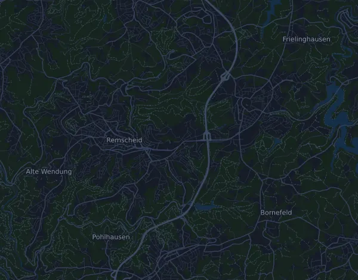

Röntgenlauf – Schein-Ultra-Marathon (63,3 km)
- Distanz
- 63,3 km
- Höhenmeter
- ↑ 124.621 m
- Höchster Punkt
- 352 m ü. M.
- Untergrund
- Trail und Gelände
- Profil
- Bergig
- Start
- 08:30 Uhr
Höhenprofil
Mit Mila vorbereiten
Mila ist eine Lauf-Coach-App. Nimmst du einen Lauf in deinen Plan auf, plant der Coach deine Wochen bis zum Start nach deiner Form und gibt dir eine Zielzeitprognose und einen Plan für Tempo, Getränke und Verpflegung auf der Strecke.

Der richtige Lauf am richtigen Tag.
Die Strecke

Über die Strecke
Röntgenlauf – Schein-Ultra-Marathon (63,3 km) ist ein Traillauf in Remscheid-Lennep (Sportzentrum Hackenberg), Deutschland, über 63,3 km. Die Strecke hat insgesamt 124.621 Höhenmeter bergauf und 124.475 bergab, 1.969 m pro km, und ist damit bergig. Der höchste Punkt liegt auf 352 m ü. M., der tiefste auf 0 m.
Der größte Anstieg beginnt bei km 3,3: 352 Höhenmeter auf 100 m mit durchschnittlich 338,2 % Steigung, bis auf 352 m. Insgesamt hat die Strecke 60 Anstiege ab 25 Höhenmetern; der letzte beginnt bei km 7,7.
In der Mila-App beschreibt der Coach die Strecke ausführlich in deiner Sprache und plant dein Pacing und deine Verpflegung dafür.
Anstiege
| Beginnt bei | Länge | Höhenmeter | Steigung | Gipfel (m ü. M.) |
|---|---|---|---|---|
| km 0,0 | 30 m | 321 m | 1.211,5 % | 321 |
| km 0,1 | 490 m | 188 m | 38,5 % | 348 |
| km 0,6 | 10 m | 58 m | 614,6 % | 232 |
| km 0,6 | 630 m | 237 m | 37,4 % | 352 |
| km 1,4 | 50 m | 349 m | 680,5 % | 349 |
| km 1,5 | 20 m | 348 m | 1.496,6 % | 348 |
| km 1,8 | 150 m | 222 m | 144,0 % | 331 |
| km 2,0 | 80 m | 166 m | 209,1 % | 331 |
| km 2,2 | 10 m | 325 m | 2.849,5 % | 325 |
| km 2,2 | 10 m | 160 m | 1.457,3 % | 320 |
| km 2,3 | 120 m | 319 m | 257,5 % | 319 |
| km 2,5 | 630 m | 348 m | 55,1 % | 348 |
| km 3,1 | 90 m | 349 m | 412,5 % | 349 |
| km 3,3 | 100 m | 352 m | 338,2 % | 352 |
| km 4,0 | 20 m | 117 m | 521,5 % | 348 |
| km 4,0 | 10 m | 174 m | 1.225,0 % | 348 |
| km 4,5 | 20 m | 160 m | 896,1 % | 321 |
| km 4,6 | 190 m | 321 m | 170,4 % | 321 |
| km 4,8 | 50 m | 163 m | 322,9 % | 324 |
| km 4,9 | 20 m | 162 m | 1.115,0 % | 324 |
| km 4,9 | 110 m | 217 m | 193,1 % | 217 |
| km 5,0 | 40 m | 162 m | 397,3 % | 324 |
| km 5,1 | 30 m | 324 m | 1.038,9 % | 324 |
| km 5,2 | 90 m | 323 m | 359,2 % | 323 |
| km 5,3 | 70 m | 318 m | 454,1 % | 318 |
| km 5,4 | 70 m | 314 m | 437,6 % | 314 |
| km 5,5 | 20 m | 307 m | 1.453,1 % | 307 |
| km 5,5 | 50 m | 298 m | 598,8 % | 298 |
| km 5,8 | 30 m | 142 m | 480,7 % | 286 |
| km 5,8 | 30 m | 144 m | 573,0 % | 144 |
Vor dem Start
Startzeiten
- 08:30 Uhr
Quelle: roentgenlauf.de, abgerufen am 24. November 2026
Häufige Fragen
Wann findet Röntgenlauf – Schein-Ultra-Marathon (63,3 km) statt?
Röntgenlauf – Schein-Ultra-Marathon (63,3 km) findet am Sonntag, 31. Oktober 2027 statt. Prüfe Datum und Startzeit beim Veranstalter.
Wann ist der Start bei Röntgenlauf – Schein-Ultra-Marathon (63,3 km)?
Laut Veranstalter: 08:30 Uhr.
Wie lang ist Röntgenlauf – Schein-Ultra-Marathon (63,3 km) und wie viele Höhenmeter hat die Strecke?
Der Lauf ist 63,3 km lang mit 124.621 Höhenmetern bergauf und 124.475 bergab. Der höchste Punkt liegt auf 352 m ü. M.
Wie ist die Strecke von Röntgenlauf – Schein-Ultra-Marathon (63,3 km)?
Die Strecke ist bergig, mit durchschnittlich 1.969 Höhenmetern pro km. Sie hat 60 Anstiege ab 25 Höhenmetern; der größte beginnt bei km 3,3: 352 Höhenmeter auf 100 m. Start und Ziel liegen am selben Ort. Der Untergrund ist Trail und Gelände.
Wie teile ich mir Röntgenlauf – Schein-Ultra-Marathon (63,3 km) ein?
Lauf eher mit gleichmäßiger Anstrengung als mit gleichmäßigem Tempo: Lass das Tempo an den Anstiegen sinken, hol es zurück, wo es flacher wird, und halte dich auf den ersten Kilometern zurück. Die größten Anstiege beginnen bei km 1,4, km 1,5, km 3,1 und km 3,3. In Mila bekommst du einen Pace-Plan für genau diese Strecke, passend zu deiner Form.
Ähnliche Läufe
Weitere Läufe in der Nähe
- swb-Marathon Bremen (Marathon) 42,2 km3. Oktober 2027 · Bremen, Deutschland
- Berlin-Marathon (från 2027: GENERALI BERLIN-MARATHON) 42,2 km26. September 2027 · Berlin, Deutschland
- Schuster Tegernseelauf – DIE RADIOLOGIE Halbmarathon (21,2 km)19. September 2027 · Gmund am Tegernsee (Gut Kaltenbrunn), Deutschland
- Zugspitz Ultra Trail by UTMB – Ultratrail (ZUT100) 107 km18. Juni 2027 · Garmisch-Partenkirchen, Deutschland
- WVV Marathon Würzburg 42,2 km23. Mai 2027 · Würzburg, Deutschland
- GutsMuths-Rennsteiglauf – Supermarathon (73,9 km)22. Mai 2027 · Eisenach, Deutschland
Mit Mila vorbereiten
Der richtige Lauf am richtigen Tag.
Die Angaben stammen aus der Streckendatei und den Informationen des Veranstalters. Prüfe Datum, Startzeiten und Regeln beim Veranstalter.
Mila ist nicht mit dem Veranstalter oder den Sponsoren des Laufs verbunden und wird von ihnen weder gesponsert noch empfohlen. Namen und Marken gehören ihren Inhabern. Veranstalter oder Rechteinhaber? Änderung oder Entfernung beantragen